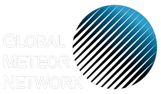

Servizi utili
Strumenti, previsioni e misurazioni
Meteo Pula
Pljusak.com
Libri
Ricerca nel catalogo della biblioteca
Spot the Asteroid
Trova l'asteroide nell'immagine

Gli asteroidi di Palisa
Asteroidi scoperti dall'Osservatorio di Pola

Stato della camera GMN
Global Meteor Network
Cosa si vede in cielo?
Oggetti visibili stasera
Calendario
Eventi e attività